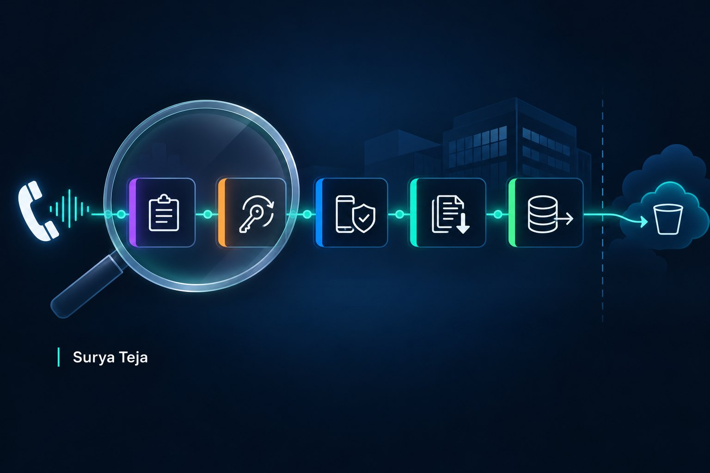

Hunting a help desk MFA reset that ends in a SaaS data export
A hands-on KQL lab: find an identity takeover that started with a phone call, using synthetic Entra ID, Defender for Cloud Apps, ticketing and warehouse data.

A caller tells the service desk she has a new phone and can't approve sign-ins. The agent asks a few questions, removes her authenticator and resets her password. Seven minutes later someone registers a new authenticator for her account and signs in to the CRM. Nothing in that sequence is malware, and every step is an action the identity platform was built to allow.
I built a lab around this pattern. You work through it in the browser with real KQL against a fixed synthetic dataset, and it takes about an hour. It is free with a sign-in.
The pattern in public reporting
Several teams have described the same opening move over the last three years:
- Okta Security reported on 31 August 2023 that between 29 July and 19 August 2023, callers asked IT service desks at several of its US customers to reset all MFA factors for highly privileged users.
- Microsoft Threat Intelligence reported on 25 October 2023 that Octo Tempest calls help desks to get passwords reset and MFA methods changed or added, and that it copied CRM and support-desk data through third-party data connectors.
- FBI and CISA reported in advisory AA23-320A (November 2023, revised July 2025) that Scattered Spider social-engineers IT help desks into resetting passwords and MFA tokens and then registers its own MFA tokens.
- Mandiant reported on 13 June 2024 that UNC3944 called service desks claiming a new phone, passed verification using personal details such as the last four digits of a Social Security number and a manager's name, then used single sign-on to reach SaaS applications and move their data to attacker-owned cloud storage.
The lab generalizes from these reports. None of them describes the exact path the lab uses into a cloud data warehouse; in the lab, the warehouse stands for "a SaaS data source reached through single sign-on". No real organization is modeled.
Why it is hard to hunt
Every step looks like routine administration. An agent deleting a user's authentication method and resetting a password is what a lost-phone ticket is supposed to produce. Once the caller registers their own authenticator, sign-ins show MFA satisfied, so a detection built on MFA failures sees nothing after the first prompt.
The evidence that matters most sits outside the usual SIEM tables. Whether the caller was verified, and whether they called from the number on file, lives in the ticketing system. Many workspaces don't ingest it.
Volume doesn't help much either. A large CRM export on the last day of a quarter is normal, and a nightly ETL job moves more warehouse data than any attacker in the lab.
Network logs are the obvious thing to ask for, and they would not have helped. Mandiant's 2024 report makes the point that firewall and netflow logs are ineffective for detecting large outbound transfers from SaaS platforms: the data moves between cloud services and an outside client, not through the corporate network. The lab has no proxy or firewall logs on purpose, and the final assessment asks what that gap does and does not hide.
The hypothesis
If an attacker obtained an MFA reset by calling the service desk, then within hours of an admin deleting a user's authentication method we expect:
- a help desk ticket for that user without strong verification,
- a new security-info registration from a network the user has not used,
- successful MFA sign-ins from that network to SaaS apps, and
- bulk export activity in those apps that is new for the user from that network.
What the lab asks
The lab has seven query steps, a timeline you build from pinned rows, and an assessment. These are three of the questions you can only answer by working through the data:
- In the two weeks, admins changed passwords or authentication methods on three accounts. Which fields in the ticket data separate the one that matters from a properly verified lost-phone reset?
- Two accounts exported far more CRM records than anyone else. What do you have to group by so the real user's routine exports don't hide the attacker's?
- After the attack, the real user tries to sign in. What does that look like in the data, and why is it some of the strongest evidence you have?
Try it: Help desk MFA reset to SaaS data export
The lab runs on five tables: SigninLogs and AuditLogs from Microsoft Entra ID, CloudAppEvents from Defender for Cloud Apps, and two lab tables for help desk tickets and warehouse query history. Microsoft table columns were checked against Microsoft Learn. The query engine is a small KQL subset written for these labs, not Microsoft's engine, and the lab documents what it supports and where it differs.
Lessons
Join identity changes to the ticket. The reset itself looks the same whether the caller was verified or not. The verification method, the verification status and whether the caller's number matched the number on file are the fields that decide it, so the ticket export is worth ingesting.
Group by account and network, not by account alone. An attacker using a real user's account inherits that user's history. Summarizing by account merges the attacker's exports with the user's routine ones.
Look for the real user. Failed sign-ins with the old password from the office, followed by a second ticket saying "my password stopped working", confirm a takeover better than any anomaly score.
Separate look-alikes with fields, not stories. In the lab, each benign look-alike is ruled out by data: a verified ticket with a callback to the number on file, a compliant device with a device ID, a key-pair login from an internal orchestrator. "She was travelling" or "it's quarter end" is not evidence until a field says so.
Name the gap and the log that closes it. The lab's data cannot show whether anyone retrieved the files copied to the outside storage location, or whether the CRM exports were downloaded. The logs that would answer that are the warehouse provider's access history for the stage, the storage provider's access logs and CRM download events. Proxy logs would not.
References
- Okta Security, 2023-08-31: Cross-Tenant Impersonation: Prevention and Detection
- Microsoft Threat Intelligence, 2023-10-25: Octo Tempest crosses boundaries to facilitate extortion, encryption, and destruction
- FBI and CISA, AA23-320A, 2023-11-16, revised 2025-07-29: Scattered Spider
- Mandiant, 2024-06-13: UNC3944 Targets SaaS Applications
- Mandiant, 2025-05-06: Defending Against UNC3944: Cybercrime Hardening Guidance from the Frontlines
- MITRE ATT&CK: T1684.001 Social Engineering: Impersonation, T1556.006 Modify Authentication Process: Multi-Factor Authentication, T1537 Transfer Data to Cloud Account
- Microsoft Learn: SigninLogs, AuditLogs, CloudAppEvents
About the data
All data in the lab and in this post is synthetic. The organization, people, tickets and events are invented. Names use example.com and the .example domain, IP addresses come from the documentation ranges 192.0.2.0/24, 198.51.100.0/24 and 203.0.113.0/24 plus private 10.0.0.0/8 addresses, and phone numbers are in the fictional 555-0100 to 555-0199 range. Nothing in the lab connects to a real tenant.